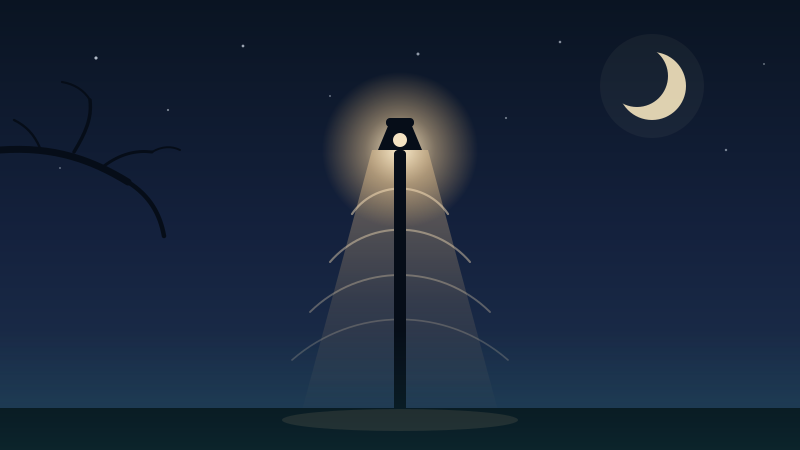

"Chuyện ngày xưa" — Trúc Phương"Chuyện ngày xưa" (The Old Story) — Trúc Phương
Có những bài hát không cần hiểu hết lời cũng thấy buồn. "Chuyện ngày xưa" là một trong số đó — một bản nhạc vàng hơn sáu mươi năm tuổi, viết ra từ một cuộc gặp lại không ai mong, bởi một người nhạc sĩ mà cuộc đời còn buồn hơn những gì ông viết.
Some songs make you sad before you have even followed the words. "Chuyện ngày xưa" is one of them — a Vietnamese "yellow music" ballad more than sixty years old, written out of a reunion nobody had wished for, by a composer whose own life turned out sadder than anything he wrote.

Hai đường dẫn đầu là tìm kiếm, không phải một video cụ thể — nên chúng không chết khi một bản tải lên nào đó bị gỡ. Đường dẫn thứ ba có thể hỏng một ngày nào đó; lúc ấy bài viết này vẫn còn nguyên. The first two are searches, not one particular video — so they survive when some upload is taken down. The third may break one day; this article will still be here when it does.
Một bài hát từ trước năm 1975A song from before 1975
"Chuyện ngày xưa" là một tuyệt phẩm nhạc vàng nổi tiếng, được cố nhạc sĩ Trúc Phương sáng tác trước năm 1975 — thường được ghi là vào khoảng năm 1962. Đó là quãng thời gian sung sức nhất của ông, cũng là lúc dòng nhạc bolero ở miền Nam đang ở đỉnh cao.
"Chuyện ngày xưa" is a well-known piece of Vietnamese nhạc vàng ("yellow music"), written by the late composer Trúc Phương before 1975 — usually dated to around 1962. That was his most productive period, and also the height of the bolero style in southern Vietnam.
Câu chuyện đằng sau bài hátThe story behind the song
Bài hát ra đời từ những cảm xúc có thật trong cuộc sống của Trúc Phương — một người vốn trầm lặng, khép kín, mang tâm hồn đa sầu đa cảm. Theo những gì được kể lại, ca khúc được gợi hứng từ một lần người yêu cũ tìm đến thăm ông sau một thời gian dài xa cách.
The song came out of something that actually happened to Trúc Phương — a quiet, withdrawn man with an unusually sensitive temperament. As the story is told, it was prompted by a visit: a former love came to see him after a long separation.
Cuộc gặp ấy không mang lại niềm vui sum họp. Nó chỉ gợi lên nỗi buồn xót xa khi cả hai nhận ra duyên xưa đã lỡ làng. Hình ảnh đọng lại trong bài là một cô gái "đến thăm mà quên mang tiếng cười" — ngồi đó, lặng im, không còn gì để nói. Và lời từ biệt cuối cùng:
The meeting brought no joy of reunion. It only opened up a quiet ache, as both realised the old bond had long since passed them by. The image the song keeps is of a woman who "came to visit but forgot to bring her laughter" — sitting there, silent, with nothing left to say. And then the parting line:
"Thôi em nhé xin trả về niềm cô đơn trước…"
"Thôi em nhé xin trả về niềm cô đơn trước…"
— "So be it; let me give you back the loneliness that came before."
Không trách móc, không níu kéo. Chỉ là trả lại cho nhau đúng cái mà mỗi người đã có trước khi gặp nhau. Tôi nghĩ sức nặng của bài hát nằm hết ở chữ "trả về" ấy.
No reproach, no attempt to hold on. Just handing back to each other exactly what each had carried before they met. I think the whole weight of the song sits in that one phrase, "give back".
Đôi nét về nhạc sĩ Trúc PhươngA few words about Trúc Phương
Trúc Phương tên thật là Nguyễn Thiện Lộc, sinh năm 1933 tại Trà Vinh, mất ngày 18/9/1995 tại Sài Gòn. Ông được nhiều người gọi là "ông hoàng của dòng nhạc bolero" — không phải vì viết nhiều nhất, mà vì hầu như bài nào của ông cũng ở lại rất lâu trong trí nhớ người nghe.
Trúc Phương's real name was Nguyễn Thiện Lộc. He was born in 1933 in Trà Vinh, in the Mekong Delta, and died on 18 September 1995 in Saigon. Many call him "the king of bolero" — not for writing the most songs, but because almost everything he wrote stayed in people's memory for decades.
Một số ca khúc gắn liền với tên ông:
Some of the songs his name is inseparable from:
- Nửa đêm ngoài phố
- Buồn trong kỷ niệm
- Hai lối mộng
- Tàu đêm năm cũ
- Mưa nửa đêm
- Ai cho tôi tình yêu
- Con đường mang tên em
- Bóng nhỏ đường chiều
- Chiều cuối tuần
- Thói đời
Chất nhạc của ông rất dễ nhận: điệu bolero chậm, giai điệu đi từng bước một như người đang lững thững trên phố đêm, và lời ca thì gần như không bao giờ to tiếng. Chủ đề quen thuộc là chia xa, đêm khuya, chuyến tàu, con phố, và những mối tình không đi đến đâu.
His musical signature is easy to recognise: a slow bolero, a melody that walks rather than runs — like someone drifting along a street at night — and words that almost never raise their voice. The recurring subjects are separation, late nights, trains, city streets, and loves that went nowhere.
Những năm cuối đờiHis final years
Có một điều buồn mà người yêu nhạc Việt hầu như ai cũng biết: sau năm 1975, cuộc sống của Trúc Phương rất cơ cực. Người viết ra những bài hát mà cả miền Nam thuộc lòng đã có những năm tháng không có nổi một chỗ ở ổn định — câu chuyện thường được kể lại là ông phải ngủ nhờ ở bến xe, thuê một chiếc chiếu để qua đêm. Ông qua đời năm 1995 trong cảnh nghèo.
There is a sad fact that most lovers of Vietnamese music know: after 1975, Trúc Phương's life became very hard. The man whose songs the whole south could sing from memory spent years without a stable roof — the account usually told is that he slept at a bus station, renting a sleeping mat for the night. He died in 1995 in poverty.
Vì sao một bài hát sáu mươi năm tuổi vẫn được hát lạiWhy a sixty-year-old song keeps being sung
Bản trong video ở đầu trang là một bản phối mới, làm năm 2026 — tức là hơn sáu mươi năm sau khi bài hát ra đời. Mỗi thế hệ lại mang nó về một kiểu: có bản mộc chỉ guitar thùng, có bản dựng cả dàn dây, có bản hát chậm hơn nguyên tác rất nhiều.
The recording at the top of this page is a new arrangement made in 2026 — more than sixty years after the song was written. Each generation brings it back in its own way: a bare version with nothing but an acoustic guitar, one with a full string section, one sung far slower than the original.
Bài hát sống được lâu như vậy, tôi nghĩ, vì nó không kể một câu chuyện cụ thể của riêng ai. Nó chỉ dựng lại một khoảnh khắc mà gần như ai cũng từng đi qua: gặp lại một người, nhận ra mọi thứ đã khác, và hiểu rằng điều tử tế nhất lúc đó là im lặng rồi quay đi.
It survives, I think, because it does not tell any one person's particular story. It simply reconstructs a moment nearly everyone passes through: meeting someone again, realising everything has changed, and understanding that the kindest thing left to do is to stay quiet and walk away.
Vì sao bài này nằm ở đâyWhy this one is here
Góc này của trang vốn dành cho những bản nhạc tôi hay mở khi làm việc khuya. Nghe thì chẳng liên quan gì đến mạch điện, nhưng tôi vẫn tin hai việc có một chỗ giống nhau: cùng là ngồi rất lâu với một thứ, kiên nhẫn chỉnh từng chút một, và biết rằng phần hay nhất thường nằm ở chỗ mình chịu bỏ bớt đi chứ không phải chỗ thêm vào.
This corner of the site is for the music I put on when working late. It has nothing to do with circuits, and yet I keep thinking the two share one thing: both are about sitting with something for a long time, adjusting it patiently, and knowing that the best part usually comes from what you are willing to take away rather than what you add.
Ghi chú kỹ thuật: vì sao trang này không nhúng videoA technical note: why this page embeds no video
Ban đầu trang này nhúng thẳng một video. Tôi bỏ đi vì hai lý do. Thứ nhất là bản quyền: bài hát vẫn trong thời hạn bảo hộ, và bản ghi âm là một quyền riêng nữa thuộc về người thực hiện — tải về rồi tự đăng lại không phải là cách lách, đó đúng là điều mà luật cấm. Thứ hai là tuổi thọ của đường dẫn: một video có thể bị gỡ bất cứ lúc nào, và khi đó khung nhúng chỉ còn là một ô đen ghi "video không khả dụng".
This page used to embed a video directly. I removed it for two reasons. First, copyright: the song is still protected, and the recording carries a second right belonging to whoever made it — downloading and re-posting it is not a loophole, it is the thing the law actually forbids. Second, link rot: a video can be taken down at any moment, and the embed then becomes a black box reading "video unavailable".
Cách sửa không phải là đi tìm chỗ lưu khác, mà là đổi cái gì là nội dung chính. Phần thuộc về trang này — bài viết, tranh minh hoạ ở trên — nằm ngay trong kho mã nguồn, không ai gỡ được. Mọi bản thu chỉ còn là chỗ tham chiếu, và tham chiếu thì trỏ bằng tìm kiếm chứ không trỏ vào một video duy nhất. Đây đúng là nguyên tắc tôi vẫn dùng khi thiết kế: đừng để một điểm hỏng duy nhất làm chết cả hệ thống.
The fix is not to find somewhere else to host it, but to change what counts as the content. What belongs to this page — the writing, the drawing above — sits in the repository itself, where nobody can remove it. Any recording is only a reference, and a reference should point through a search rather than at one single video. This is the same principle I work by in design: never let one point of failure take the whole system down.
Đọc thêmFurther reading
- Trúc Phương — tiểu sử trên Wikipedia tiếng Việtbiography on Vietnamese Wikipedia.
- "Chuyện ngày xưa" — các bản thu hiện có; bản tôi hay nghe là bản phối 2026 của kênh Quán Nửa Đêmthe recordings available; the one I listen to is the 2026 arrangement by the Quán Nửa Đêm channel.
- Trang này chỉ trích vài chữ trong lời bài hát để bình luận; bản quyền ca khúc thuộc về tác giả và những người thừa kế. This page quotes only a few words of the lyrics for commentary; the song remains the copyright of its author and his heirs.